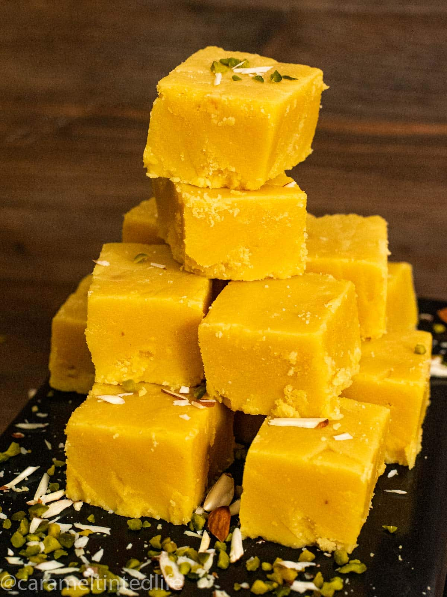

Desserts
pumpkin sugar cookies
These Pumpkin Sugar Cookies with Bourbon Cinnamon Frosting are gluten free, vegan and SO soft and delicious!
click here
Royal Gulab Jamuns
Gulab jamun is an Indian dessert of fried dough balls that are soaked in a sweet, sticky sugar syrup the syrup has a delicate rose flavour
click here

Mysore Pak
Mysore Pak is an Indian sweet prepared with besan cooked in a mixture of sugar and ghee. A popular sweet during Diwali.
click here
chocolate cherry cake
Do you love chocolate and cherries? Well, you'll LOVE this chocolate cherry cake that's filled with a creamy cherry layer!
click here
pink macarons
These Pink Macarons are filled with white chocolate ganache. They’re perfect for any party, celebration, or holiday!
click here
rice kheer – chawal ki kheer
traditional Indian rice pudding made with rice, milk, sugar, cardamom, and nuts. Vegetarian, one-pot, and gluten-free
click here

gajar ka halwa
Gajar Halwa or Carrot Halwa is a traditonal Winter Delicacy.It is made by simmering carrots in milk, adding sugar, cardamoms and nuts.
click here
coconut ice cream
Coconut ice cream, with no eggs, no ice cream machine and no hard work! Just a blender will create this beauty for you to devour!
click here
UKADICHE MODAK
Steamed rice flour dumplings with sweet coconut jaggery filling. These traditional sweets are made during Ganesh Chaturthi Festival
click here
Shahi Tukda
Shahi Tukda is an Indian Indian bread pudding dipped in thickened milk infused with flavors of saffron and cardamom.
click here
Sweet Potato Pie
This sweet potato pie is the perfect pie for Thanksgiving celebrations. It is lightly sweet and has the best custard filling.
click here
Tropical Smoothie
Healthy tropical smoothie recipe. It has mangoes, pineapples (both are frozen), orange juice, sugar, and yogurt.
click here
Mango Shrikhand
An Instant 10 minute recipe for authentic Indian Mango Shrikhand. Sweetened yoghurt with mango, saffron, and mixed nuts.
click here
Rasmalai
Soft, melt-in-mouth cottage cheese balls soaked in flavourful reduced milk. This is a popular Indian dessert.
click here
Vermicelli Kheer
Seviyan kheer or Semiyan payasam is a creamy and delicious dessert that you can put together in a cinch.
click here
Basundi
Basundi is a sweet thickened milk flavored with cardamom, saffron and nuts. A simple recipe is made on festivals in India.
click here